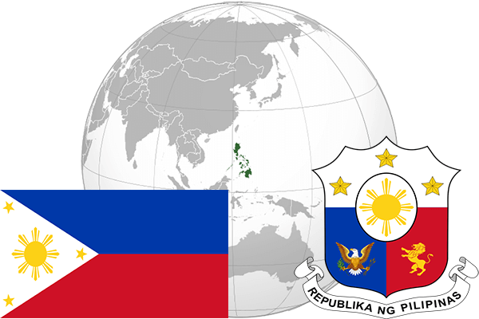

To`liq nomi: Filippin Respublikasi
Region: Janubiy Sharqiy Osiyo
Qonunchilik shakli: Respublika
Mustaqillik kuni: 4 iyul 1946 (AQShdan)
Poytaxt: Manila
Maydoni: 300,000 km²
Chegaradosh davlatlari: Yo’q
Aholisi: 102 921 200 (2015-yil)
Aholi zichligi: 338 /км²
Aholining o`rtacha yoshi: 68,40 yil
Rasmiy tili: Ingliz, filippin tillari
Dini: Xristian
Pul birligi: Filippin Pesosi
Telefon prefiksi: +63
Internet domen: .ph
Xalqaro tashkilotlarga a`zoligi: BMT
Dengiz va okeanlarga chiqishi: Tinch okeani
YIM: Butun: $389.48 mlrd.( 2017-yil) Jon boshiga: $3,593
Yirik shaharlari: Manila, Pasay